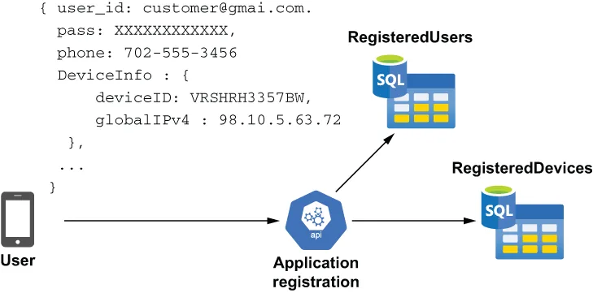
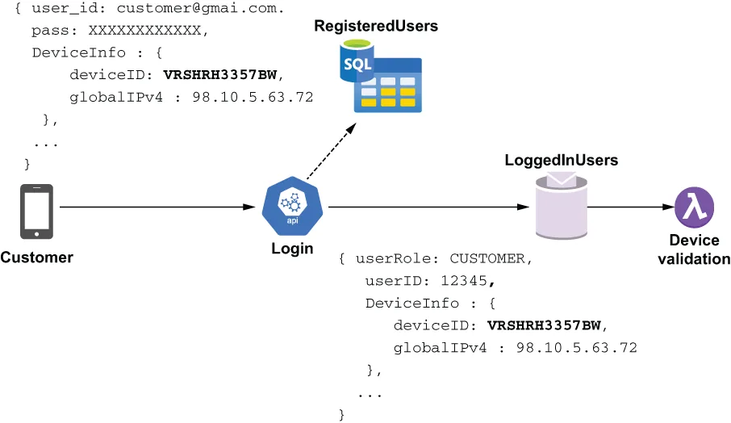
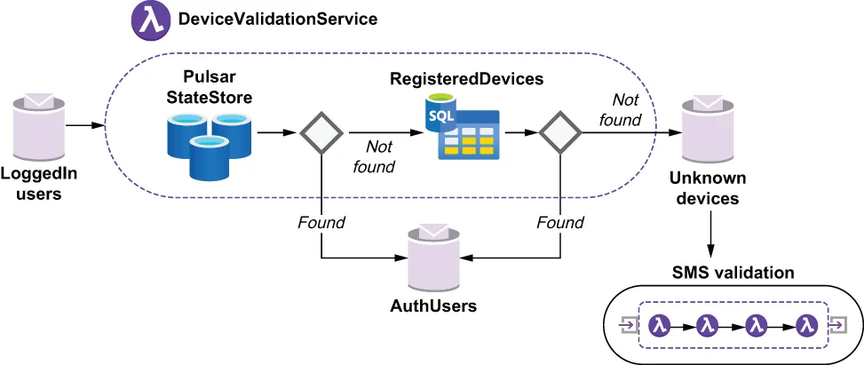
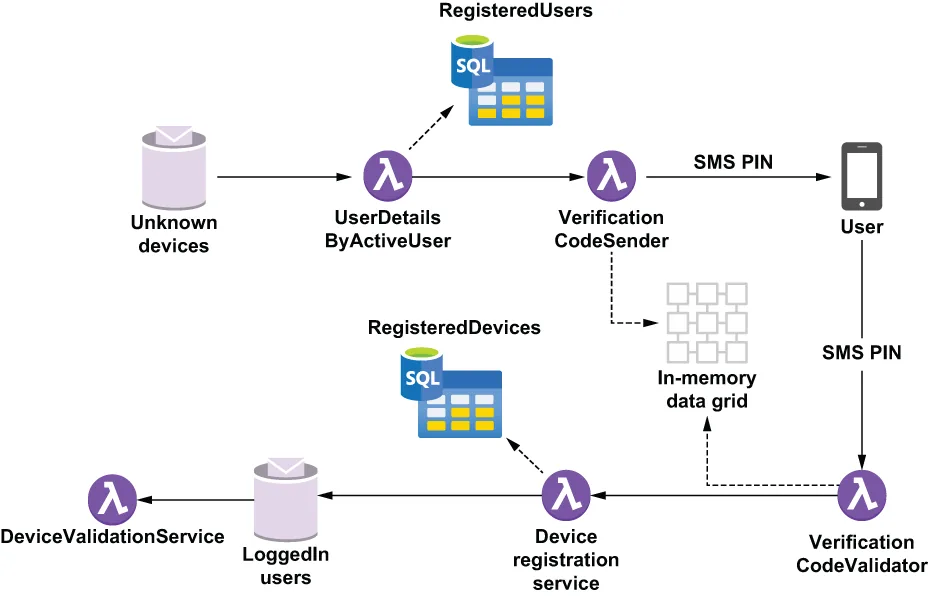

When a customer first downloads the GottaEat mobile application from the App Store and installs it on their phone, the customer needs to create an account. The customer chooses an email/password to use for their login credentials and submits them along with the mobile number and device ID used to uniquely identify the device. As you can see from figure 10.2, this information is then stored in the MySQL database to be used to authenticate the user whenever they log in in the future.
当客户第一次从 App Store 下载 GottaEat 移动应用并把它装到自己手机上时，这位客户需要创建一个账户。客户选择一个邮箱/密码来作为自己的登录凭据，并把它们连同用于唯一标识该设备的手机号和设备 ID 一起提交上去。从图 10.2 中可以看到，这些信息随后会被存放到 MySQL 数据库中，以便日后该用户每次登录时用来对其做认证。

Figure 10.2 A non-Pulsar microservice handles the application registration use case and stores the provided user credentials and device information in the MySQL database.
图 10.2 一个非 Pulsar 的微服务负责处理应用注册这个用例，并把所提供的用户凭据和设备信息存放到 MySQL 数据库中。
When a user logs into the GottaEat application, we will use the information stored in the database to validate the provided credentials and authenticate the device they are using to connect with. Since we recorded the device ID when the user first registered, we can compare the device ID provided when the user logged in with the one on record. This acts like a cookie does for a web browser and allows us to confirm that the user is using a trusted device. As you can see in figure 10.3, after we validate the user’s credentials against the values stored in the RegisteredUsers table, we place the user record in the LoggedInUsers topic for further processing by the DeviceValidation function to ensure that the user is using a trusted device.
当用户登录 GottaEat 应用时，我们将利用数据库中存放的那些信息来校验其所提供的凭据，并对他用来连接的那个设备做认证。由于我们在用户首次注册时就记录下了设备 ID，因此我们可以把用户登录时所提供的设备 ID 与记录在案的那个做比对。这就像 cookie 之于 Web 浏览器所起的作用一样，让我们得以确认该用户正在使用一台受信设备。从图 10.3 中可以看到，在我们依据 RegisteredUsers 表中存放的值校验完用户的凭据之后，我们会把这条用户记录放进 LoggedInUsers 主题，交由 DeviceValidation 函数做进一步处理，以确保该用户正在使用一台受信设备。

Figure 10.3 The device ID is provided when the customer logs into the mobile application; we then cross-reference it against known devices that we have previously associated with the user.
图 10.3 客户登录移动应用时会提供设备 ID；随后我们拿它与此前已关联到该用户的那些已知设备做交叉比对。
This provides an additional level of security and prevents identity thieves from placing fraudulent orders using stolen customer credentials because it also requires the would-be fraudsters to provide the correct device ID in order to place an order. You might be asking yourself: What happens if the customer is simply using a new or different device? This is a perfectly valid scenario that we need to handle for situations where they buy a new cell phone or log into their account from a different device. In such a scenario, we will use SMS-based two-factor authentication in which we send a randomly-generated 5-digit PIN code to the mobile number that the customer provided when they registered and wait for them to respond back with that code. This is a very common technique used to authenticate users of mobile applications.
这提供了又一层安全保障，并能防止身份窃贼用偷来的客户凭据去下欺诈订单——因为它同时还要求那些潜在的欺诈者提供正确的设备 ID 才能下单。你可能会问自己：如果客户只是换了一台新的或不同的设备，那会怎样？这是一个完全合理的场景，我们必须加以处理，以应对他们买了一部新手机、或者从另一台设备登录自己账户的情况。在这种场景下，我们将采用基于短信的双因子认证：向该客户注册时所提供的那个手机号发送一个随机生成的 5 位 PIN 码，然后等待他们把这个码回传给我们。这是一种被用来认证移动应用用户的、非常常见的技术。

Figure 10.4 Inside the DeviceValidationService, we compare the given device ID with the device most recently used by the customer, and if it is the same, we authorize the user. Otherwise, we check to see if it is on the list of known devices for the user and initiate two-factor authentication if necessary.
图 10.4 在 DeviceValidationService 内部，我们把给定的设备 ID 与该客户最近使用过的那台设备做比对，如果一致，就授权该用户。否则，我们就检查它是否在该用户的已知设备列表上，并在必要时启动双因子认证。
As you can see in figure 10.4, the device validation process first attempts to retrieve the customer’s most recently used device ID from Pulsar’s internal state store, which, as you may recall from chapter 4, is a key-value store that can be used by stateful Pulsar functions to retain stateful information. The Pulsar state store uses Apache BookKeeper for storage to ensure that any information written to it will be persisted to disk and replicated. This ensures that the data will outlive any associated Pulsar function instance that is reading the data.
从图 10.4 中可以看到，设备校验流程首先会尝试从 Pulsar 的内部状态存储中取回该客户最近使用过的设备 ID——你应该还记得第 4 章讲过，那是一个键值存储，可被有状态的 Pulsar 函数用来保存状态信息。Pulsar 的状态存储使用 Apache BookKeeper 作为存储后端，以确保任何写入其中的信息都会被持久化到磁盘并被复制。这确保了这些数据会比任何一个正在读取它们的 Pulsar 函数实例活得更久。
However, this reliance on BookKeeper for storage comes at a performance cost, since the data has to be written to disk. Therefore, even though the state store provides the same key-value semantics as other data stores, such as the IMDG, it does so at a much higher latency rate. Consequently, it is not recommended to use the state store for data that will be read and written frequently. It is better suited for infrequent read/write use cases, such as the device ID, which is only called once per user session.
然而，这种依赖 BookKeeper 来做存储的做法是有性能代价的，因为数据必须被写进磁盘。因此，尽管状态存储提供了与其他数据存储（例如 IMDG）相同的键值语义，它却是以高得多的延迟为代价做到的。因此，不建议把状态存储用于那些会被频繁读写的数据。它更适合于读写不频繁的用例，例如设备 ID——它在每个用户会话中只被调用一次。
Listing 10.1 shows the logical flow of the DeviceValidationService as it attempts to locate the device ID from two different data sources. The base class contains all of the source code related to connecting to the MySQL database and is also used by the DeviceRegistrationService to update the database if the SMS authentication is successful.
清单 10.1 展示了 DeviceValidationService 的逻辑流程——它试图从两个不同的数据源中定位出设备 ID。那个基类包含了与连接 MySQL 数据库相关的全部源代码，并且也被 DeviceRegistrationService 所使用：如果短信认证成功，它就靠这个基类去更新数据库。
Listing 10.1 The DeviceValidationService
public class DeviceValidationService extends DeviceServiceBase implements
Function<ActiveUser, ActiveUser> {
...
@Override
public ActiveUser process(ActiveUser u, Context ctx) throws Exception {
boolean mustRegister = false;
if (StringUtils.isBlank(u.getDevice().getDeviceId())) { ❶
mustRegister = true;
}
String prev = getPreviousDeviceId(
u.getUser().getRegisteredUserId(), ctx); ❷
if (StringUtils.equals(prev, EMPTY_STRING)) {
mustRegister = true; ❸
} else if (StringUtils.equals(prev, u.getDevice().getDeviceId())) {
return u; ❹
} else if (isRegisteredDevice(u.getUser().getRegisteredUserId(),
u.getDevice().getDeviceId().toString())) { ❺
ByteBuffer value = ByteBuffer.allocate(
u.getDevice().getDeviceId().length());
value.put(u.getDevice().getDeviceId().toString().getBytes());
ctx.putState("UserDevice-" + u.getDevice().getDeviceId(), value); ❻
}
if (mustRegister) {
ctx.newOutputMessage(registrationTopic, Schema.AVRO(ActiveUser.class))
.value(u)
.sendAsync(); ❼
return null;
} else {
return u;
}
}
private String getPreviousDeviceId(long registeredUserId, Context ctx) {
ByteBuffer buf = ctx.getState("UserDevice-" + registeredUserId); ❽
return (buf == null) ? EMPTY_STRING :
new String(buf.asReadOnlyBuffer().array());
}
private boolean isRegisteredDevice(long userId, String deviceId) {
try (Connection con = getDbConnection();
PreparedStatement ps = con.prepareStatement( "select count(*) "
+ "from RegisteredDevice where user_id = ? "
+ " AND device_id = ?")) {
ps.setLong(1, userId);
ps.setNString(2, deviceId);
ResultSet rs = ps.executeQuery();
if (rs != null && rs.next()) {
return (rs.getInt(1) > 0); ❾
}
} catch (ClassNotFoundException | SQLException e) {
// Ignore these
}
return false;
}
...
}
❶ If the user didn’t provide a device ID at all
❶ 如果用户根本就没有提供设备 ID。
❷ Get the previous device ID for this user from the state store.
❷ 从状态存储中取出该用户上一次使用的设备 ID。
❸ There is no previous device ID for this user.
❸ 该用户没有上一次使用过的设备 ID。
❹ The provided device ID matches the value in the state store.
❹ 所提供的设备 ID 与状态存储中的值一致。
❺ See if the device id is in the list of known devices for the user.
❺ 看看这个设备 ID 是否在该用户的已知设备列表里。
❻ This is a known device, so update the state store with the provided device ID.
❻ 这是一台已知设备，于是用所提供的设备 ID 更新状态存储。
❼ This is an unknown device, so publish a message in order to perform SMS validation.
❼ 这是一台未知设备，于是发布一条消息以便执行短信校验。
❽ Look up the device ID in the state store using the user ID.
❽ 用用户 ID 在状态存储中查找设备 ID。
❾ Return true if the provided device ID is associated with the user.
❾ 如果所提供的设备 ID 与该用户相关联，就返回 true。
If the device cannot be associated with the current user, a message will be published to the UnknownDevices topic that is used to feed the SMS validation process. As you may have noticed in figure 10.4, the SMS validation process is comprised of a sequence of Pulsar functions that must coordinate with one another to perform the two-factor authentication.
如果这个设备无法与当前用户关联起来，就会有一条消息被发布到 UnknownDevices 主题——该主题被用来为短信校验流程提供输入。正如你在图 10.4 中可能已经注意到的，短信校验流程由一连串 Pulsar 函数构成，它们必须彼此协同才能完成这次双因子认证。

Figure 10.5 The SMS validation process is performed by a collection of Pulsar Functions that send a 5-digit code to the user’s registered mobile number and validate the code sent back from the user.
图 10.5 短信校验流程由一组 Pulsar Functions 完成：它们向用户注册时留下的手机号发送一个 5 位编码，并对用户回传回来的那个编码进行校验。
The first Pulsar function within the SMS validation process reads messages off the UnknownDevices topic and uses the registered user ID to retrieve the mobile number we will be sending the SMS validation code to. This is a very straightforward data access pattern in which we use the primary key to retrieve information from a relational database and forward it to another function. While this approach is typically considered an anti-pattern because it violates the encapsulation principle I mentioned earlier, I decided to break it out into its own function for the two reasons. The first is reusability of the code itself, as there are multiple use cases in which we will need to retrieve all of the information about a particular user, and I want to have that logic contained within a single class, rather than spread across multiple functions, so it is easy to maintain. The second reason is that we will need some of this information later on within the DeviceRegistration service, so I decided to pass all of the information along rather than perform the same database query twice to reduce processing latency.
短信校验流程中的第一个 Pulsar 函数会从 UnknownDevices 主题上读取消息，并利用那个已注册用户 ID 来取回我们要把短信校验码发往的那个手机号。这是一种非常直白的数据访问模式：我们用主键从关系数据库中检索出信息，再把它转发给另一个函数。虽然这种做法通常被认为是一种反模式，因为它违反了我前面提到的封装原则，但我还是决定把它拆成一个独立的函数，原因有两条。第一条是代码本身的可复用性——因为有多个用例都需要取回某个特定用户的全部信息，而我希望能把这段逻辑收在单个类里，而不是散落在多个函数中，这样便于维护。第二条原因是：稍后在 DeviceRegistration 服务内部我们还会用到其中的部分信息，因此我决定把所有信息一并往下传，而不是把同一个数据库查询做两遍，以降低处理延迟。
As you can see from the next listing, the UserDetailsByActiveUser function provides the registered user ID to the UserDetailsLookup class, which performs the database query to retrieve the data and return a UserDetails object.
从下面这份清单可以看到，UserDetailsByActiveUser 函数把那个已注册用户 ID 提供给 UserDetailsLookup 类，由后者执行数据库查询来取回数据并返回一个 UserDetails 对象。
Listing 10.2 The UserDetailsByActiveUser function
public class UserDetailsByActiveUser implements
Function<ActiveUser, UserDetails> {
private UserDetailsLookup lookupService = new UserDetailsLookup(); ❶
@Override
public UserDetails process(ActiveUser input, Context ctx) throws Exception{
return lookupService.process(
input.getUser().getRegisteredUserId(), ❷
ctx); ❸
}
}
❶ Create an instance of the class that performs the database lookup.
❶ 创建那个执行数据库查询的类的实例。
❷ Pass in the primary key field used in the lookup.
❷ 传入用于查询的那个主键字段。
❸ Pass in the context object so that lookup class can access the database credentials, etc.
❸ 传入 context 对象，以便那个查询类能够访问数据库凭据等等。
This pattern of extracting just the primary key from the incoming message and passing it to a different class that performs the lookup can be reused for any use case, and in the case of the GottaEat application, it is used by a different Pulsar function flow to retrieve the user information for a given food order, as shown in the following listing.
这种"只从传入消息中取出主键、再把它交给另一个类去执行查询"的模式，可以被复用到任何用例上；而在 GottaEat 应用中，它就被另一条 Pulsar 函数流程用来取回某个给定餐品订单所对应的用户信息，如下面这份清单所示。
Listing 10.3 The UserDetailsByFoodOrder function
public class UserDetailsByFoodOrder implements
Function<FoodOrder, UserDetails> {
private UserDetailsLookup lookupService = new UserDetailsLookup(); ❶
@Override
public UserDetails process(FoodOrder order, Context ctx) throws Exception {
return lookupService.process(
order.getMeta().getCustomerId(), ❷
ctx); ❸
}
}
❶ Create an instance of the class that performs the database lookup.
❶ 创建那个执行数据库查询的类的实例。
❷ Pass in the primary key field used in the lookup.
❷ 传入用于查询的那个主键字段。
❸ Pass in the context object so that lookup class can access the database credentials, etc.
❸ 传入 context 对象，以便那个查询类能够访问数据库凭据等等。
The underlying lookup class used to provide the information is shown in listing 10.4 and encapsulates the logic required to query the database tables to retrieve all of the information. This data access pattern can be used to retrieve data from any relational database table that you need to access from your Pulsar functions.
用来提供这些信息的那个底层查询类如清单 10.4 所示，它把查询数据库表以取回全部信息所需的逻辑封装了起来。这种数据访问模式可以被用来从任何一张你需要从 Pulsar 函数访问的关系数据库表中取回数据。
Listing 10.4 The UserDetailsLookup function
public class UserDetailsLookup implements Function<Long, UserDetails> {
. . .
private Connection con;
private PreparedStatement stmt;
private String dbUrl, dbUser, dbPass, dbDriverClass;
@Override
public UserDetails process(Long customerId, Context ctx) throws Exception {
if (!isInitalized()) { ❶
dbUrl = (String) ctx.getUserConfigValue(DB_URL_KEY);
dbDriverClass = (String) ctx.getUserConfigValue(DB_DRIVER_KEY);
dbUser = (String) ctx.getSecret(DB_USER_KEY);
dbPass = (String) ctx.getSecret(DB_PASS_KEY);
}
return getUserDetails(customerId);
}
private UserDetails getUserDetails(Long customerId) {
UserDetails details = null;
try (Connection con = getDbConnection();
PreparedStatement ps = con.prepareStatement("select ru.user_id, "
+ " ru.first_name, ru.last_name, ru.email, "
+ "a.address, a.postal_code, a.phone, a.district,"
+ "c.city, c2.country from GottaEat.RegisteredUser ru "
+ "join GottaEat.Address a on a.address_id = c.address_id "
+ "join GottaEat.City c on a.city_id = c.city_id "
+ "join GottaEat.Country c2 on c.country_id = c2.country_id "
+ "where ru.user_id = ?");) { ❷
ps.setLong(1, customerId); ❸
try (ResultSet rs = ps.executeQuery()) {
if (rs != null && rs.next()) {
details = UserDetails.newBuilder()
.setEmail(rs.getString("ru.email"))
.setFirstName(rs.getString("ru.first_name"))
.setLastName(rs.getString("ru.last_name"))
.setPhoneNumber(rs.getString("a.phone"))
.setUserId(rs.getInt("ru.user_id"))
.build(); ❹
}
} catch (Exception ex) {
// Ignore
}
} catch (Exception ex) {
// Ignore
}
return details;
}
. . .
}
❶ Ensure we have all the required properties from the user context object.
❶ 确保我们已经从用户 context 对象中拿到了全部必需的属性。
❷ Perform the lookup for the given user ID.
❷ 针对给定的用户 ID 执行查询。
❸ Use the user ID in the first parameter in the prepared statement.
❸ 把用户 ID 用在预编译语句的第一个参数上。
❹ Map the relational data to the UserDetails object.
❹ 把关系型数据映射到 UserDetails 对象上。
The UserDetailsByActiveUser function passes the UserDetails to the VerificationCodeSender function, which in turn sends the validation code to the customer and records the associated transaction ID in the IMDG. This transaction ID is required by the VerificationCodeValidator function to validate the PIN sent back by the user; however, as you can see from figure 10.5, there isn’t an intermediate Pulsar topic between the VerificationCodeSender function and the VerificationCodeValidator, so we cannot pass this information inside a message. Instead we have to rely on this external data store to pass along this information.
UserDetailsByActiveUser 函数会把 UserDetails 传给 VerificationCodeSender 函数，后者接着把校验码发给客户，并把与之关联的那个事务 ID 记录到 IMDG 中。VerificationCodeValidator 函数需要这个事务 ID，才能对用户回传回来的 PIN 进行校验；然而，正如你从图 10.5 中可以看到的，在 VerificationCodeSender 函数与 VerificationCodeValidator 之间并不存在一个中间的 Pulsar 主题，因此我们无法把这条信息放在消息里传过去。取而代之，我们不得不依靠这个外部数据存储来把这条信息传下去。
The IMDG is perfect for this task since the information is short lived and does not need to be retained for longer than the time the code is valid. If the PIN sent back by the user is valid, the next function will add the newly authenticated device to the RegisterdDevices table for future reference. Finally, the user will be sent back to the LoggedInUser topic so that the device ID can by updated in the state store.
IMDG 非常适合这项任务，因为这条信息的生命周期很短，不需要被保留得比那个编码的有效期更久。如果用户回传回来的 PIN 是有效的，下一个函数就会把这台新通过认证的设备加进 RegisterdDevices 表，以备将来查考。最后，该用户会被送回 LoggedInUser 主题，以便其设备 ID 能在状态存储中被更新。
Since the VerificationCodeSender and VerificationCodeValidator functions use the IMDG to communicate with one another, I decided to have them share a common base class, which provides connectivity to the shared cache, as shown in the following listing.
由于 VerificationCodeSender 与 VerificationCodeValidator 这两个函数是借助 IMDG 来彼此通信的，我决定让它们共用一个基类，由该基类提供到那个共享缓存的连接能力，如下面这份清单所示。
Listing 10.5 The VerificationCodeBase
public class VerificationCodeBase {
protected static final String API_HOST = "sms-verify-api.com"; ❶
protected IgniteClient client; ❷
protected ClientCache<Long, String> cache; ❸
protected String apiKey;
protected String datagridUrl;
protected String cacheName; ❹
protected boolean isInitalized() {
return StringUtils.isNotBlank(apiKey);
}
protected ClientCache<Long, String> getCache() {
if (cache == null) {
cache = getClient().getOrCreateCache(cacheName);
}
return cache;
}
protected IgniteClient getClient() {
if (client == null) {
ClientConfiguration cfg =
new ClientConfiguration().setAddresses(datagridUrl);
client = Ignition.startClient(cfg); ❺
}
return client;
}
}
❶ The hostname of the third-party service used to perform the SMS verification
❶ 用于执行短信校验的那个第三方服务的主机名。
❷ Apache Ignite thin client
❷ Apache Ignite 瘦客户端。
❸ Apache Ignite cache used to store the data
❸ 用于存放数据的 Apache Ignite 缓存。
❹ The name of the Cache both services will be accessing
❹ 两个服务都将访问的那个缓存的名称。
❺ Connect the thin client to the in-memory data grid.
❺ 把这个瘦客户端连接到内存数据网格上。
The VerificationCodeSender uses the mobile phone number from the UserDetails object provided by the UserDetailsByActiveUser function to call the third-party SMS validation service, as shown in the following listing.
VerificationCodeSender 利用由 UserDetailsByActiveUser 函数所提供的那个 UserDetails 对象中的手机号码，去调用第三方短信校验服务，如下面这份清单所示。
Listing 10.6 The VerificationCodeSender function
public class VerificationCodeSender extends VerificationCodeBase
implements Function<ActiveUser, Void> {
private static final String BASE_URL = "https://" + RAPID_API_HOST +
"/send-verification-code"; ❶
private static final String REQUEST_ID_HEADER = "x-amzn-requestid";
@Override
public Void process(ActiveUser input, Context ctx) throws Exception {
if (!isInitalized()) { ❷
apiKey = (String) ctx.getUserConfigValue(API_KEY);
datagridUrl = ctx.getUserConfigValue(DATAGRID_KEY).toString();
cacheName = ctx.getUserConfigValue(CACHENAME_KEY).toString();
}
OkHttpClient client = new OkHttpClient();
Request request = new Request.Builder()
.url(BASE_URL + "?phoneNumber=" + toE164FormattedNumber(
input.getDetails().getPhoneNumber().toString())
+ "&brand=GottaEat")
.post(EMPTY_BODY)
.addHeader("x-rapidapi-key", apiKey)
.addHeader("x-rapidapi-host", RAPID_API_HOST)
.build(); ❸
Response response = client.newCall(request).execute(); ❹
if (response.isSuccessful()) { ❺
String msg = response.message();
String requestID = response.header(REQUEST_ID_HEADER); ❻
if (StringUtils.isNotBlank(requestID)) { ❼
getCache().put(input.getUser().getRegisteredUserId(), requestID);
}
}
return null;
}
}
❶ URL of the third-party service used to send the SMS verification code
❶ 用于发送短信校验码的那个第三方服务的 URL。
❷ Ensure we have all the required properties from the user context object.
❷ 确保我们已经从用户 context 对象中拿到了全部必需的属性。
❸ Build the HTTP request object for the third-party service.
❸ 为那个第三方服务构造 HTTP 请求对象。
❹ Send the request object to the third-party service.
❹ 把这个请求对象发给那个第三方服务。
❺ Whether the request was successful
❺ 这次请求是否成功。
❻ Retrieve the request ID from the response object.
❻ 从响应对象中取回请求 ID。
❼ If we have a request ID, store it in the IMDG.
❼ 如果我们拿到了请求 ID，就把它存进 IMDG。
If the HTTP call is successful, the third-party service provides a unique request ID value in its response message that can be used by the VerificationCodeValidator function to validate the response sent back by the user. As you can see in listing 10.6, we store this request ID in the IMDG using the user ID as the key. Later, when the user responds with a PIN value, we can then use this value to authenticate the user, as shown in the following listing.
如果这次 HTTP 调用成功，第三方服务就会在其响应消息中提供一个唯一的请求 ID 值，VerificationCodeValidator 函数可以用它来校验用户回传回来的响应。正如你在清单 10.6 中所看到的，我们以用户 ID 为键，把这个请求 ID 存进了 IMDG。之后，当用户用一个 PIN 值做出回应时，我们就可以拿这个值来对该用户进行认证，如下面这份清单所示。
Listing 10.7 The VerificationCodeValidator function
public class VerificationCodeValidator extends VerificationCodeBase
implements Function<SMSVerificationResponse, Void> { ❶
public static final String VALIDATED_TOPIC_KEY = "";
private static final String BASE_URL = "https://" + RAPID_API_HOST
+ "/check-verification-code"; ❷
private String valDeviceTopic; ❸
@Override
public Void process(SMSVerificationResponse input, Context ctx)
throws Exception {
if (!isInitalized()) {
apiKey = (String) ctx.getUserConfigValue(API_KEY).orElse(null);
valDeviceTopic = ctx.getUserConfigValue(VALIDATED_TOPIC_KEY).toString();
}
String requestID = getCache().get(input.getRegisteredUserId()); ❹
if (requestID == null) {
return null; ❺
}
OkHttpClient client = new OkHttpClient();
Request request = new Request.Builder()
.url(BASE_URL + "?request_id=" + requestID + "&code="
+ input.getResponseCode())
.post(EMPTY_BODY)
.addHeader("x-rapidapi-key", apiKey)
.addHeader("x-rapidapi-host", RAPID_API_HOST)
.build(); ❻
Response response = client.newCall(request).execute();
if (response.isSuccessful()) { ❼
ctx.newOutputMessage(valDeviceTopic,
Schema.AVRO(SMSVerificationResponse.class))
.value(input)
.sendAsync(); ❽
}
return null;
}
}
❶ Takes in an SMS verification response object
❶ 接收一个短信校验响应对象。
❷ URL of the third-party service used to perform the SMS verification
❷ 用于执行短信校验的那个第三方服务的 URL。
❸ Pulsar topic to publish validated device info to
❸ 要把已校验设备信息发布到的那个 Pulsar 主题。
❹ Get the request ID from the IMDG.
❹ 从 IMDG 中取出请求 ID。
❺ If there was no request ID found for the user, then we are done.
❺ 如果没有为该用户找到请求 ID，那我们就此结束。
❻ Construct the HTTP request to the third-party service.
❻ 构造发往那个第三方服务的 HTTP 请求。
❼ If the user responded with the correct PIN, then the device was validated.
❼ 如果用户用正确的 PIN 做出了回应，那么这台设备就通过了校验。
❽ Publish a new message to the validated device topic.
❽ 向那个已校验设备主题发布一条新消息。
This flow between the two Functions involved in the SMS validation process demonstrates how to exchange information between Pulsar functions that are not connected by an intermediate topic. However, the biggest limitation to this approach is the amount of data that can be retained inside the memory of the data grid itself. For larger datasets that need to be shared across Pulsar functions, a disk-backed cache is a better solution.
参与短信校验流程的这两个函数之间的这条流转，演示了如何在那些并没有被某个中间主题连接起来的 Pulsar 函数之间交换信息。然而，这种做法最大的局限在于数据网格自身的内存里能留存多少数据。对于那些需要跨 Pulsar 函数共享的更大规模数据集，磁盘支撑型缓存是更好的解决方案。